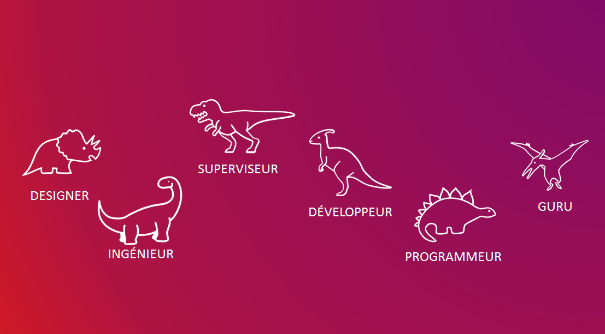

This is a question a colleague asked me when I suggested we organize one for our greater team. He has just told me about a script he was writing in python that he was developing in his spare time to speed up his work. This got me thinking of how we could not only get him the time to develop such project but encourage it. Together we prepared a pitch for our upper management, then once we got the green light we started developing what would be a 2 day hackathon with 20 participants and five resulting proof of concepts
Over the next month and a half we prepared and organized the Hackathon completely in a silo with almost no input or influence from management. Balancing this planning with our day-to-day workload required quick, informed decision making and a solid direction. Overall the event was extremely successful with many of the project moving forward to real solutions.
The one aspects the other credited beyond the organization of the event was the presentation of the collatoral surrounding the event. Specifically for the event, I created an HTML email template to be used for all of the recruiting, built a fun informative video explaining what a Hackathon is, and powerpoint template with suggested layouts. One of the creatives that I added were outline of cute dinosaurs to reference that anyone can participate, independant of age or experience level. This concept was really embrance to the effect that we used toy dinosaurs as prizes and all of the winners have them on their desks.